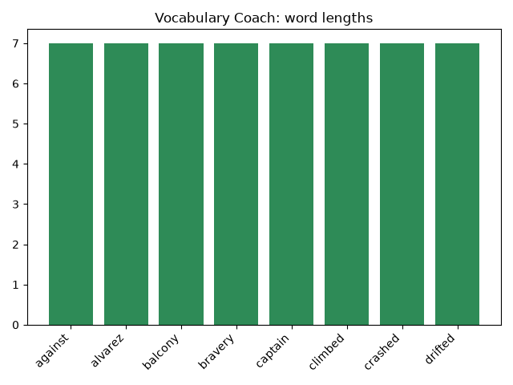

Project 20: NLP Capstone
The Year 3 capstone is Project 20, the last numbered project in KidCode, across Days 36 to 39. Students pitch a project from a short list (Story Explorer, KidBot Pro, Privacy Shield Pro, Time Traveler's News Desk) or an approved idea of their own, then build it over four days, with a beta test, an NER audit, and "How It Works" and "Limitations" cards.
What I taught that week
From the Year 3 curriculum, Week 8: Capstone & Showcase
Day 36: Capstone Build I. Project 7. Loading text from a file, running the spaCy pipeline, and organizing code into functions or classes. Daily stand-up check-ins: what I did, what is next, and what is blocking me.
Day 37: Capstone Build II. Adding features: Counter charts, a displaCy HTML export, Matcher or entity ruler rules, and try/except for missing files. Writing a comment header that explains how to run the program.
Day 38: Beta Test & NER Audit. Swapping projects so testers can try to break them with tricky texts. Running an NER audit on each tool and logging every wrong guess in a bug list.
Day 39: Polish & Demo Rehearsal. Fixing bugs, cleaning up code, and writing "How It Works" and "Limitations" cards. Rehearsing a three-minute demo with a partner.
Day 40: Showcase Day & What's Next. Presenting projects to classmates, families, and guests, and celebrating three years of KidCode with certificates. Next steps: machine learning with scikit-learn, web apps with Flask, and games with pygame.
What students built
55 students finished a capstone. Every one is built around a class and saves a chart. The class names show what they chose: Story Explorer (13), KidBot Pro (11), Vocabulary Coach (11), Privacy Shield Pro (11), News Desk (9). The median capstone is 72 lines.
One student's program
This is one real submission, shown as the student wrote it apart from the removed name header. It was chosen by a fixed rule rather than for being the best: it is the submission closest to the project's median length among those that ran cleanly and contain nothing that could identify anyone. Parts are skipped where marked with …
class VocabularyCoach:
def __init__(self, path):
self.path = path
self.doc = None
def load(self):
with open(self.path) as f:
self.doc = nlp(f.read())
def hard_words(self, min_len=7, n=8):
words = sorted({t.text.lower() for t in self.doc if t.is_alpha and len(t.text) >= min_len})
return words[:n]
def sentence_for(self, word):
for sent in self.doc.sents:
if word in sent.text.lower():
return sent.text.strip()
return "(no example sentence found)"
def quiz(self, words):
score = 0
for word in words:
guess = input(f"How many letters does '{word}' have? ")
try:
correct = int(guess) == len(word)
except ValueError:
correct = False
if correct:
score += 1
print("Correct!")
else:
print(f"Nope, it has {len(word)} letters.")
return score
A sample run of that program (the input was typed for this page)
=== Vocabulary Coach: The Lighthouse Keeper === against: Mira polished the lamp every evening while the stormy waves crashed against the rocks. alvarez: On March 3, 1921, Mira Alvarez climbed the tall lighthouse near Portland. balcony: Mira lit the great lamp and waved a red flag from the balcony. bravery: The Harbor Guild paid Mira $40 for her bravery, and Captain Brooks smiled proudly. captain: The old keeper, Captain Owen Brooks, handed her a brass lamp and said the light must never go out. climbed: On March 3, 1921, Mira Alvarez climbed the tall lighthouse near Portland. crashed: Mira polished the lamp every evening while the stormy waves crashed against the rocks. drifted: One night a small boat called the Silver Gull drifted toward the cliffs. How many letters does 'against' have? 7 Correct! How many letters does 'alvarez' have? 7 Correct! How many letters does 'balcony' have? 6 Nope, it has 7 letters. How many letters does 'bravery' have? 7 Correct! How many letters does 'captain' have? 7 Correct! How many letters does 'climbed' have? 7 Correct! How many letters does 'crashed' have? 7 Correct! How many letters does 'drifted' have? 7 Correct! Score: 7/8

The worksheet for this unit
Each unit has a pre- and post-assessment written from the same curriculum. This is the first page of the pre-assessment for the unit this project sits in: Rules, Custom Entities & Chatbots (Weeks 6–8 (Days 26–40), 8 questions).

Where it fits
The final day of the curriculum points past KidCode: machine learning with scikit-learn, web apps with Flask, and games with pygame.
Looking back
Across the three capstones (a text adventure, a text analyzer, an NLP tool), the median program goes from about 130 lines of hand-written game logic to about 120 lines of classes, files and tests, and then to about 70 lines that lean on a library for the hard parts. What grows over three years isn't length. It's how much each line is able to do.